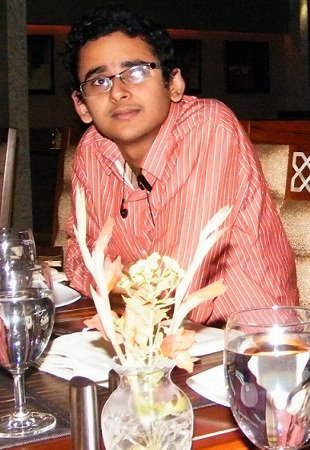

Department of Computer Science and Engineering
Indian Institute of Technology, Guwahati
India 781039

| Subhrendu Chattyopadhyay |
Cube-15, RS-2 Lab Department of Computer Science and Engineering Indian Institute of Technology, Guwahati India 781039 |
|
|---|
| Home | Academics | Publication | Contact |
|  |
I am a Research Scholar at
Department of Computer Science and Engineering, Indian Institute of Technology, Guwahati.
Currently I am working under the supervision of Prof. Sukumar Nandi. My research interests include Wireless Mesh Network with Software Defined Networking, Next Generation Wireless Mesh Networks, Distributed Algorithms and Performance Modelling of Network and Communication System (Wireless Communication). I like to read books. I also like painting and music (Specifically classical, Fusion, Sufi and instrumental). |
| Social | Publishers | IIT Gwahati | Research | People | Extra |
|---|---|---|---|---|---|
| FaceBook Google+ DBLP Google Scholar | IEEE Explore ACM dl Science Direct Conf. Rank | IIT Gwahati Dept. of CSE Webmail Conference | Wlan Standard Cognitive Networks Openflow Github | Prof. Nandi Dr. Chakraborty Niladri Sett Soumadip Biswas | TA Sketches Bookmarks |